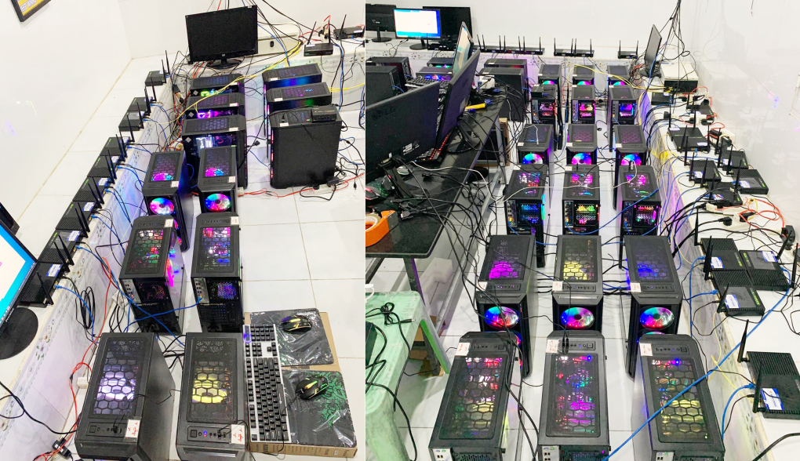
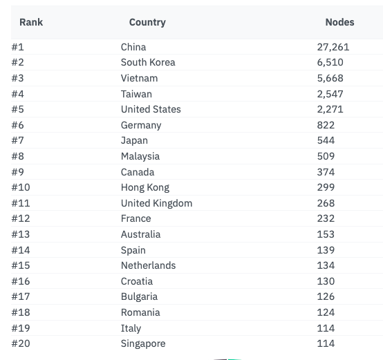

Thứ năm, 14/4/2022, 00:00 (GMT+7)
Chi trăm triệu đồng mua máy 'đào' tiền ảo Pi
Nguyễn Sơn (Bình Định) bỏ ra hơn 100 triệu đồng mua máy tính với mục đích chạy các nút mạng Pi, dù không chắc sẽ kiếm được tiền.
"Tôi thấy trên các hội nhóm Facebook nói dùng máy tính để chạy Pi Node kiếm được nhiều Pi hơn so với smartphone.
Sau khi thử trên laptop và thấy đúng như vậy, tôi đã chi ra 120 triệu đồng để mua 10 máy tính chạy node, mỗi ngày thu về hơn 150 Pi", anh Sơn chia sẻ.
"Pi chưa có giá, nhưng tôi nghĩ việc mình làm là đầu tư nên sẽ chấp nhận rủi ro".

Một hệ thống máy tính đang cài ứng dụng Pi Node. Ảnh: Tài Bùi
Theo công bố trên website của Pi Network, Pi Node, hay nút mạng Pi, là phần mềm chạy trên máy tính với vai trò tạo và lưu trữ Pi. Không giống ứng dụng Pi Network trên smartphone chỉ đóng vai trò đăng ký, đăng nhập, phục hồi tài khoản và mục đích chính là "điểm danh" để nhận Pi, Pi Node còn làm nhiệm vụ xác nhận giao dịch trong hệ thống blockchain của Pi.
Trong khi khai thác Bitcoin hay Ethereum dựa trên thuật toán bằng chứng công việc (Proof of Work), tức tính toán quá trình làm việc để nhận phần thưởng, blockchain của Pi Node lại dùng thuật toán giao thức đồng thuận Stellar (SCP). Với SCP, các node là các nhóm xác thực đáng tin cậy và chỉ đồng ý với các giao dịch mà những node khác chấp nhận. Thông qua cái gọi là vòng tròn bảo mật, các node xác định ai có hoặc không thể xác thực giao dịch trên sổ cái blockchain của Pi Network.
Do đó, để hoạt động đạt độ tin cậy cao nhất, các node cần trực tuyến càng nhiều càng tốt và hạn chế tắt máy. Phần thưởng là các đồng Pi trên Pi Node cũng cao hơn so với việc "đào" trên smartphone.
"Số Pi trên smartphone chỉ được ghi nhận tạm thời, chỉ khi tài khoản được xác thực (KYC) và Pi Network vào giai đoạn mainnet, số Pi đó sẽ được các Pi Node xử lý thành Pi thật được lưu trữ vào blockchain", Tài Bùi, một thành viên hoạt động tích cực trong các nhóm về Pi Network, giải thích.

Hệ thống Pi Node với hàng chục máy tính, mỗi máy sử dụng một đường truyền mạng riêng. Ảnh: Tài Bùi
Trong căn phòng rộng 100 mét vuông, anh Tài hiện vận hành hơn 50 máy tính chạy Pi Node, trong đó đa phần là máy được bạn bè gửi gắm để chạy hộ. "Mỗi máy sử dụng một mạng Internet riêng cho một Pi Node. Về cơ bản, có thể dùng một đường mạng cho nhiều node, nhưng chỉ có một super-node duy nhất. Nếu chạy một máy nhiều node, độ hiệu quả khi khai thác Pi sẽ không cao", anh cho biết.
Cũng theo người này, chi phí vận hành một máy tính mỗi tháng khoảng 500.000 đồng, chủ yếu là tiền điện và tiền mạng Internet. Tổng chi phí cho hơn 50 máy 25-30 triệu đồng mỗi tháng. Việc vận hành đơn giản khi chỉ kích hoạt ứng dụng mỗi ngày một lần và để cho chúng tự hoạt động.
Với diện tích trên, anh Tài dự định lắp 250 máy chỉ để chạy Pi Node. "Do anh em tin tưởng gửi máy và gửi chi phí, số tiền thực tế tôi chi ra không nhiều", anh Tài nói.
Cũng theo người này, hiệu quả của việc dùng máy tính để khai thác Pi cao hơn hẳn smartphone. Hiện người dùng điện thoại "đào" được 0,0202 Pi mỗi giờ, nhưng một máy tính có thể kiếm khoảng 10 Pi trong cùng thời gian. "Hiện Pi chưa có giá trị, nhưng bằng việc biết nắm bắt cơ hội, tôi nghĩ quả ngọt cho những người tiên phong như tôi sẽ được đền đáp trong cuối năm nay", người này nói.
Trên mạng xã hội, các chủ đề về Pi Node được thảo luận nhiều gần đây. Văn Định, quản trị viên nhóm Pi Network có hơn 50.000 thành viên, cho biết chủ đề mua máy tính cài phần mềm Pi... trong ba tháng đầu năm đã tăng hơn 50% so với cuối năm ngoái. Anh Tài cũng thường xuyên nhận được các cuộc gọi nhờ tư vấn.
Theo thống kê của Pi-blockchain, Việt Nam là một trong ba quốc gia và vùng lãnh thổ có số node Pi lớn nhất thế giới, với hơn 5.600. Hiện Trung Quốc là nơi có nhiều node Pi nhất với hơn 27.000, xếp sau là Hàn Quốc với 6.500

Việt Nam đứng thứ ba thế giới về số lượng node Pi. Nguồn: Pi-blockchain
Việt Nam cũng nằm trong số những nước có lượng người tham gia Pi nhiều nhất thế giới. Theo thống kê của Similarweb, lượng truy cập vào trang Pi Network từ các IP trong nước đầu năm nay đứng thứ tư toàn cầu, sau Mỹ, Nga và Ấn Độ. Còn theo Google Trend, xu hướng tìm kiếm về Pi tại Việt Nam nở rộ trở lại vào cuối tháng 11 năm ngoái sau khi có thông tin dự án này sắp khởi chạy mainnet.
Vấn đề liên quan đến Pi Network vẫn đang gây ra tranh cãi trong nhiều cộng đồng tiền số. Phía ủng hộ cho rằng đây là dự án dài hơi, với số người tham gia hàng chục triệu nên nhóm phát triển cần tiến hành các giai đoạn một cách thận trọng. Tuy nhiên, nhiều người khác tỏ ra thất vọng khi tiền ảo này đã xuất hiện ba năm nhưng vẫn vô giá trị, còn đội ngũ phát triển cũng không đưa ra lộ trình thống nhất xuyên suốt mà thay đổi theo từng giai đoạn.
Nhiều chuyên gia cảnh báo, Pi thiếu tính minh bạch của một dự án blockchain, thậm chí không loại trừ khả năng lừa đảo. Nền tảng không công khai mã nguồn, không có lộ trình phát triển, còn ứng dụng trên smartphone yêu cầu nhiều quyền truy cập danh bạ của người dùng. Ngoài ra, nếu tiền chỉ được lưu trên điện thoại hoặc máy chủ tập trung, người quản trị có thể thay đổi và tạo ra bao nhiêu tiền tùy theo ý muốn. Khi đó, đồng tiền cũng không còn giá trị gì.
Bảo Lâm